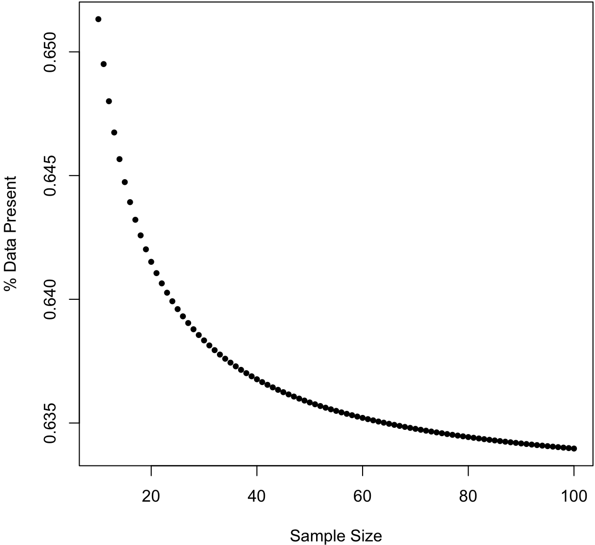
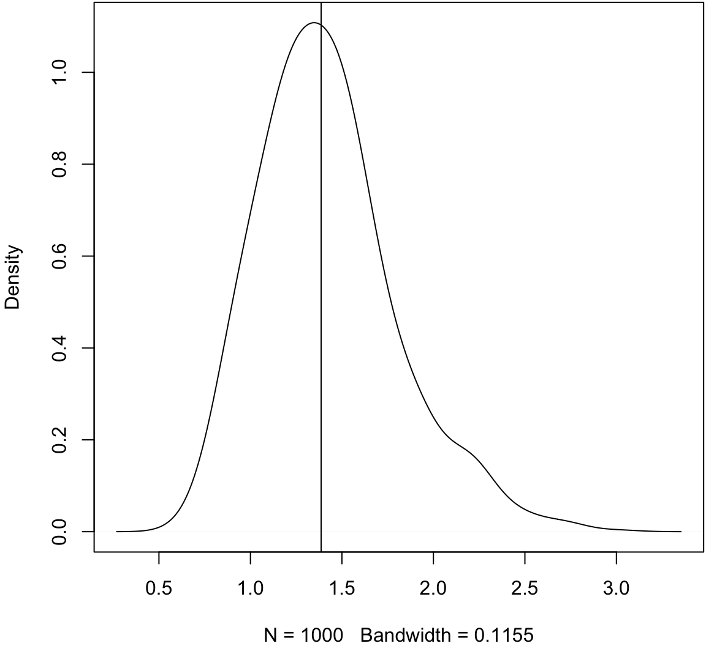
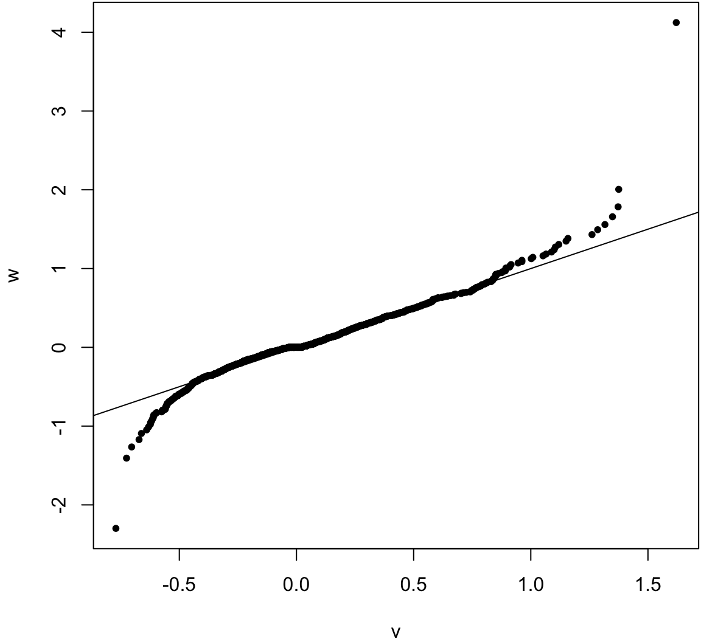
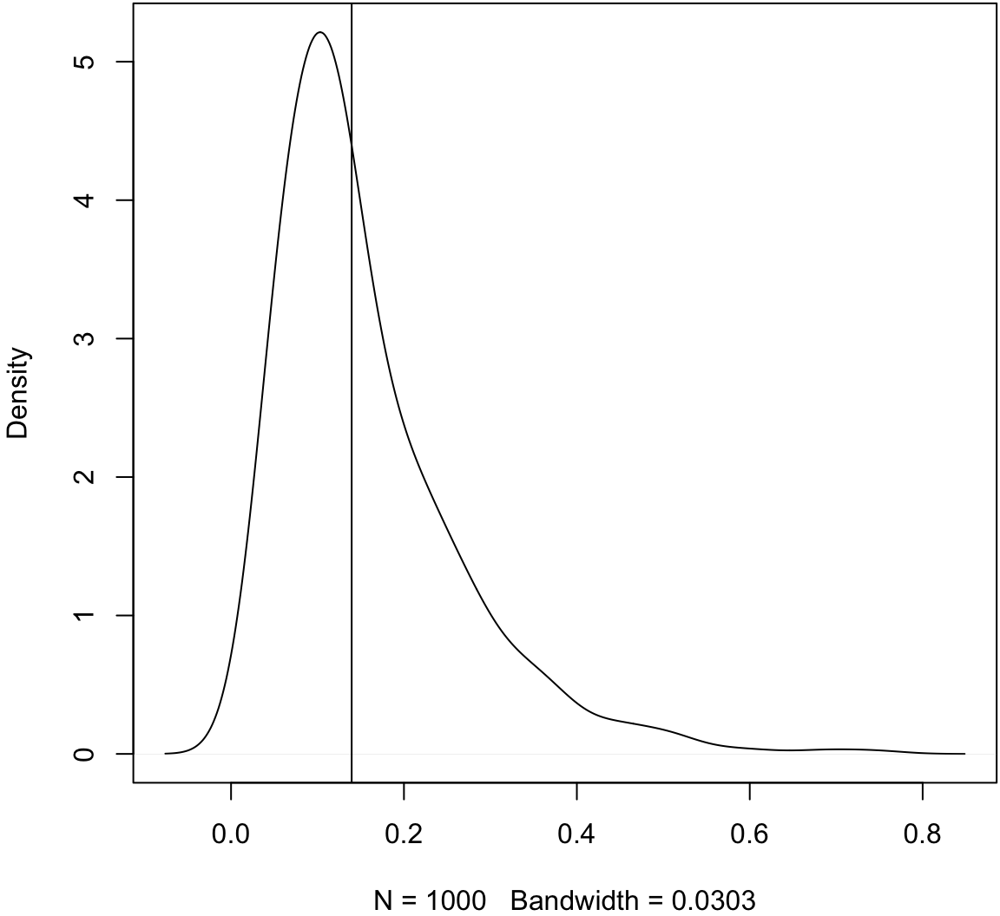
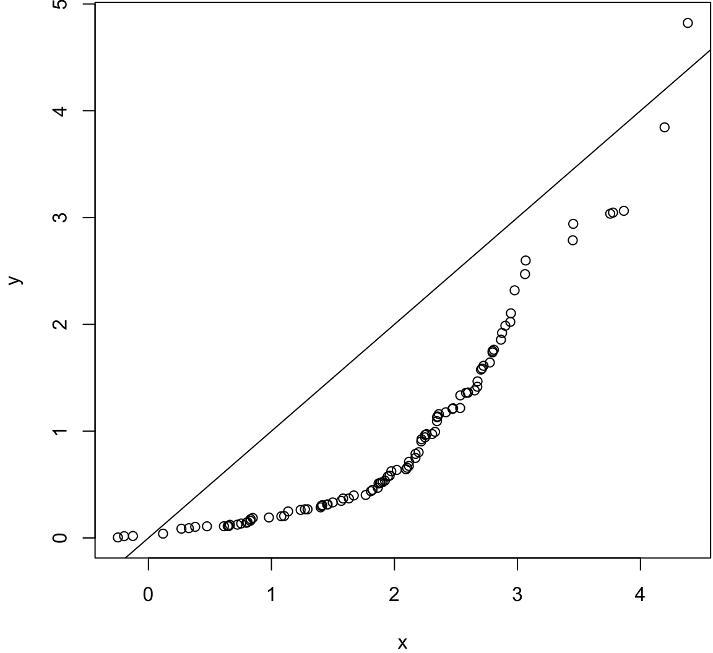
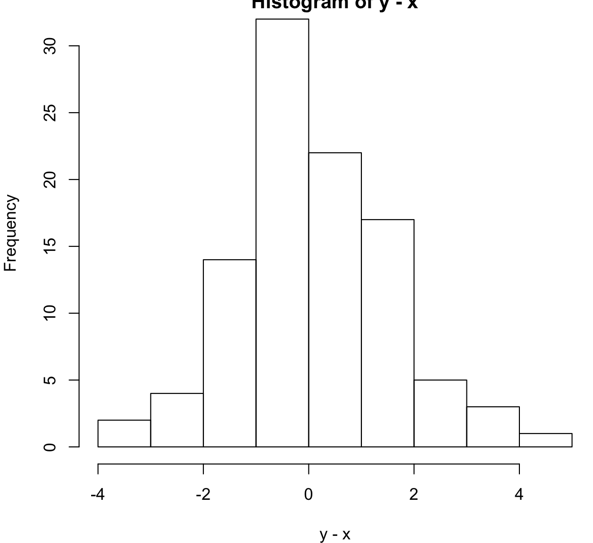
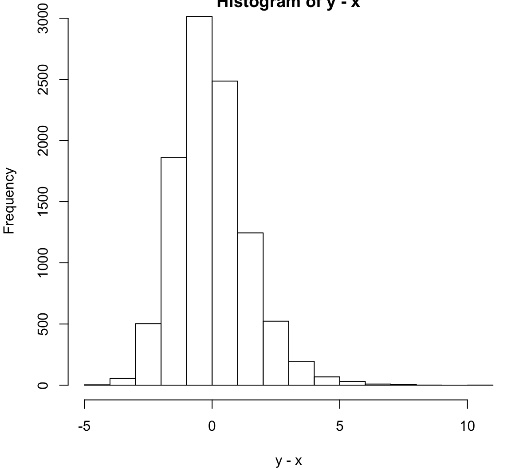

QCB 508 – Week 8
John D. Storey
Spring 2017

Nonparametric Statistics
Parametric Inference
Parametric inference is based on a family of known probability distributions governed by a defined parameter space.
The goal is to perform inference (or more generally statistics) on the values of the parameters.
Nonparametric Inference
Nonparametric inference or modeling can be described in two ways (not mutually exclusive):
An inference procedure or model that does not depend on or utilize the parametrized probability distribution from which the data are generated.
An inference procedure or model that may have a specific structure or based on a specific formula, but the complexity is adaptive and can grow to arbitrary levels of complexity as the sample size grows.
In All of Nonparametric Statistics, Larry Wasserman says:
… it is difficult to give a precise definition of nonparametric inference…. For the purposes of this book, we will use the phrase nonparametric inference to refer to a set of modern statistical methods that aim to keep the number of underlying assumptions as weak as possible.
He then lists five estimation examples (see Section 1.1): distributions, functionals, densities, regression curves, and Normal means.
Nonparametric Descriptive Statistics
Almost all of the exploratory data analysis methods we covered in the beginning of the course are nonparametric.
Sometimes the exploratory methods are calibrated by known probability distributions, but they are usually informative regardless of the underlying probability distribution (or lack thereof) of the data.
Semiparametric Inference
Semiparametric inference or modeling methods contain both parametric and nonparametric components.
An example is \(X_i | \mu_i \sim \mbox{Normal}(\mu_i, 1)\) and \(\mu_i {\; \stackrel{\text{iid}}{\sim}\;}F\) for some arbitrary distribution \(F\).
Topics This Week
- Empirical distribution functions
- Bootstrap
- Permutation methods
- Goodness of fit
- Method of moments
Empirical Distribution Functions
Definition
Suppose \(X_1, X_2, \ldots, X_n {\; \stackrel{\text{iid}}{\sim}\;}F\). The empirical distribution function (edf) – or empirical cumulative distribution function (ecdf) – is the distribution that puts probability \(1/n\) on each observed value \(X_i\).
Let \(1(X_i \leq y) = 1\) if \(X_i \leq y\) and \(1(X_i \leq y) = 0\) if \(X_i > y\).
\[ \mbox{Random variable: } \hat{F}_{{\boldsymbol{X}}}(y) = \frac{1}{n} \sum_{i=1}^{n} 1(X_i \leq y) \]
\[ \mbox{Observed variable: } \hat{F}_{{\boldsymbol{x}}}(y) = \frac{1}{n} \sum_{i=1}^{n} 1(x_i \leq y) \]
Example: Normal

Pointwise Convergence
Under our assumptions, by the strong law of large numbers for each \(y \in \mathbb{R}\),
\[ \hat{F}_{{\boldsymbol{X}}}(y) \stackrel{\text{a.s.}}{\longrightarrow} F(y) \]
as \(n \rightarrow \infty\).
Glivenko-Cantelli Theorem
Under our assumptions, we can get a much stronger convergence result:
\[ \sup_{y \in \mathbb{R}} \left| \hat{F}_{{\boldsymbol{X}}}(y) - F(y) \right| \stackrel{\text{a.s.}}{\longrightarrow} 0 \]
as \(n \rightarrow \infty\). Here, “sup” is short for supremum, which is a mathematical generalization of maximum.
This result says that even the worst difference between the edf and the true cdf converges with probability 1 to zero.
Dvoretzky-Kiefer-Wolfowitz (DKW) Inequality
This result gives us an upper bound on how far off the edf is from the true cdf, which allows us to construct confidence bands about the edf.
\[ \Pr\left( \sup_{y \in \mathbb{R}} \left| \hat{F}_{{\boldsymbol{X}}}(y) - F(y) \right| > \epsilon \right) \leq 2 \exp{-2 n \epsilon^2} \]
As outlined in All of Nonparametric Statistics, setting
\[\epsilon_n = \sqrt{\frac{1}{2n} \log\left(\frac{2}{\alpha}\right)}\]
\[L(y) = \max\{\hat{F}_{{\boldsymbol{X}}}(y) - \epsilon_n, 0 \}\]
\[U(y) = \min\{\hat{F}_{{\boldsymbol{X}}}(y) + \epsilon_n, 1 \}\]
guarantees that \(\Pr(L(y) \leq F(y) \leq U(y) \mbox{ for all } y) \geq 1-\alpha\).
Statistical Functionals
A statistical functional \(T(F)\) is any function of \(F\). Examples:
- \(\mu(F) = \int x dF(x)\)
- \(\sigma^2(F) = \int (x-\mu(F))^2 dF(x)\)
- \(\text{median}(F) = F^{-1}(1/2)\)
A linear statistical functional is such that \(T(F) = \int a(x) dF(x)\).
Plug-In Estimator
A plug-in estimator of \(T(F)\) based on the edf is \(T(\hat{F}_{{\boldsymbol{X}}})\). Examples:
\(\hat{\mu} = \mu(\hat{F}_{{\boldsymbol{X}}}) = \int x \hat{F}_{{\boldsymbol{X}}}(x) = \frac{1}{n} \sum_{i=1}^n X_i\)
\(\hat{\sigma}^2 = \sigma^2(\hat{F}_{{\boldsymbol{X}}}) = \int (x-\hat{\mu})^2 \hat{F}_{{\boldsymbol{X}}}(x) = \frac{1}{n} \sum_{i=1}^n (X_i - \hat{\mu})^2\)
\(\text{median}(\hat{F}_{{\boldsymbol{X}}}) = \hat{F}_{{\boldsymbol{X}}}^{-1}(1/2)\)
EDF Standard Error
Suppose that \(T(F) = \int a(x) dF(x)\) is a linear functional. Then:
\[ \begin{aligned} \ & {\operatorname{Var}}(T(\hat{F}_{{\boldsymbol{X}}})) = \frac{1}{n^2} \sum_{i=1}^n {\operatorname{Var}}(a(X_i)) = \frac{{\operatorname{Var}}_F(a(X))}{n} \\ \ & {\operatorname{se}}(T(\hat{F}_{{\boldsymbol{X}}})) = \sqrt{\frac{{\operatorname{Var}}_F(a(X))}{n}} \\ \ & \hat{{\operatorname{se}}}(T(\hat{F}_{{\boldsymbol{X}}})) = \sqrt{\frac{{\operatorname{Var}}_{\hat{F}_{{\boldsymbol{X}}}}(a(X))}{n}} \end{aligned} \]
Note that
\[ {\operatorname{Var}}_F(a(X)) = \int (a(x) - T(F))^2 dF(x) \] because \(T(F) = \int a(x) dF(x) = {\operatorname{E}}_F[a(X)]\). Likewise,
\[ {\operatorname{Var}}_{\hat{F}_{{\boldsymbol{X}}}}(a(X)) = \frac{1}{n} \sum_{i=1}^n (a(X_i) - T(\hat{F}_{{\boldsymbol{X}}}))^2 \]
where \(T(\hat{F}_{{\boldsymbol{X}}}) = \frac{1}{n} \sum_{i=1}^n a(X_i)\).
EDF CLT
Suppose that \({\operatorname{Var}}_F(a(X)) < \infty\). Then we have the following convergences as \(n \rightarrow \infty\):
\[ \frac{{\operatorname{Var}}_{\hat{F}_{{\boldsymbol{X}}}}(a(X))}{{\operatorname{Var}}_{F}(a(X))} \stackrel{P}{\longrightarrow} 1 \mbox{ , } \frac{\hat{{\operatorname{se}}}(T(\hat{F}_{{\boldsymbol{X}}}))}{{\operatorname{se}}(T(\hat{F}_{{\boldsymbol{X}}}))} \stackrel{P}{\longrightarrow} 1 \]
\[ \frac{T(F) - T(\hat{F}_{{\boldsymbol{X}}})}{\hat{{\operatorname{se}}}(T(\hat{F}_{{\boldsymbol{X}}}))} \stackrel{D}{\longrightarrow} \mbox{Normal}(0,1) \]
The estimators are very easy to calculate on real data, so this a powerful set of results.
Bootstrap
Rationale
Suppose \(X_1, X_2, \ldots, X_n {\; \stackrel{\text{iid}}{\sim}\;}F\). If the edf \(\hat{F}_{{\boldsymbol{X}}}\) is an accurate approximation for the true cdf \(F\), then we can utilize \(\hat{F}_{{\boldsymbol{X}}}\) in place of \(F\) to nonparametrically characterize the sampling distribution of a statistic \(T({\boldsymbol{X}})\).
This allows for the sampling distribution of more general statistics to be considered, such as the median or a percentile, as well as more traditional statistics, such as the mean, when the underlying distribution is unknown.
When we encounter modeling fitting, the bootstrap may be very useful for characterizing the sampling distribution of complex statistics we calculate from fitted models.
Big Picture
We calculate \(T({\boldsymbol{x}})\) on the observed data, and we also form the edf, \(\hat{F}_{{\boldsymbol{x}}}\).
To approximate the sampling distribution of \(T({\boldsymbol{X}})\) we generate \(B\) random samples of \(n\) iid data points from \(\hat{F}_{{\boldsymbol{x}}}\) and calculate \(T({\boldsymbol{x}}^{*(b)})\) for each bootstrap sample \(b = 1, 2, \ldots, B\) where \({\boldsymbol{x}}^{*(b)} = (x_1^{*(b)}, x_2^{*(b)}, \ldots, x_n^{*(b)})^T\).
Sampling \(X_1^{*}, \ldots, X_n^{*} {\; \stackrel{\text{iid}}{\sim}\;}\hat{F}_{{\boldsymbol{x}}}\) is accomplished by sampling \(n\) times with replacement from the observed data \(x_1, x_2, \ldots, x_n\).
This means \(\Pr\left(X^{*} = x_j\right) = \frac{1}{n}\) for all \(j\).
Bootstrap Variance
For each bootstrap sample \({\boldsymbol{x}}^{*(b)} = (x_1^{*(b)}, x_2^{*(b)}, \ldots, x_n^{*(b)})^T\), calculate bootstrap statistic \(T({\boldsymbol{x}}^{*(b)})\).
Repeat this for \(b = 1, 2, \ldots, B\).
Estimate the sampling variance of \(T({\boldsymbol{x}})\) by
\[ \hat{{\operatorname{Var}}}(T({\boldsymbol{x}})) = \frac{1}{B} \sum_{b=1}^B \left(T\left({\boldsymbol{x}}^{*(b)}\right) - \frac{1}{B} \sum_{k=1}^B T\left({\boldsymbol{x}}^{*(k)}\right) \right)^2 \]
Caveat
Why haven’t we just been doing this the entire time?!
In All of Nonparametric Statistics, Larry Wasserman states:
There is a tendency to treat the bootstrap as a panacea for all problems. But the bootstrap requires regularity conditions to yield valid answers. It should not be applied blindly.
The bootstrap is easy to motivate, but it is quite tricky to implement outside of the very standard problems. It sometimes requires deeper knowledge of statistical theory than likelihood-based inference.
Bootstrap Sample
For a sample of size \(n\), what percentage of the data is present in any given bootstrap sample?

Bootstrap CIs
Suppose that \(\theta = T(F)\) and \(\hat{\theta} = T(\hat{F}_{{\boldsymbol{x}}})\).
We can use the bootstrap to generate data from \(\hat{F}_{{\boldsymbol{x}}}\).
For \(b = 1, 2, \ldots, B\), we draw \(x_1^{*(b)}, x_2^{*(b)}, \ldots, x_n^{*(b)}\) as iid realiztions from \(\hat{F}_{{\boldsymbol{x}}}\), and calculate \(\hat{\theta}^{*(b)} = T(\hat{F}_{{\boldsymbol{x}}^{*(b)}})\).
Let \(p^{*}_{\alpha}\) be the \(\alpha\) percentile of \(\left\{\hat{\theta}^{*(1)}, \hat{\theta}^{*(2)}, \ldots, \hat{\theta}^{*(B)}\right\}\).
Let’s discuss several ways of calculating confidence intervals for \(\theta = T(F)\).
Invoking the CLT
If we have evidence that the central limit theorem can be applied, we can form the \((1-\alpha)\) CI as:
\[ (\hat{\theta} - |z_{\alpha/2}| {\operatorname{se}}^*, \hat{\theta} + |z_{\alpha/2}| {\operatorname{se}}^*) \]
where \({\operatorname{se}}^*\) is the bootstrap standard error calculated as
\[ {\operatorname{se}}^{*} = \sqrt{\frac{1}{B} \sum_{b=1}^B \left(\hat{\theta}^{*(b)} - \frac{1}{B} \sum_{k=1}^B \hat{\theta}^{*(k)} \right)^2}. \]
Note that \({\operatorname{se}}^*\) serves as estimate of \({\operatorname{se}}(\hat{\theta})\).
Note that to get this confidence interval we need to justify that the following pivotal statistics are approximately Normal(0,1):
\[ \frac{\hat{\theta} - \theta}{{\operatorname{se}}(\hat{\theta})} \approx \frac{\hat{\theta} - \theta}{{\operatorname{se}}^*} \]
Percentile Interval
If a monotone function \(m(\cdot)\) exists so that \(m\left(\hat{\theta}\right) \sim \mbox{Normal}(m(\theta), b^2)\), then we can form the \((1-\alpha)\) CI as:
\[ \left(p^*_{\alpha/2}, p^*_{1-\alpha/2} \right) \]
where recall that in general \(p^{*}_{\alpha}\) is the \(\alpha\) percentile of bootstrap estimates \(\left\{\hat{\theta}^{*(1)}, \hat{\theta}^{*(2)}, \ldots, \hat{\theta}^{*(B)}\right\}\)
Pivotal Interval
Suppose we can calculate percentiles of \(\hat{\theta} - \theta\), say \(q_{\alpha}\). Note that the \(\alpha\) percentile of \(\hat{\theta}\) is \(q_\alpha + \theta\). The \(1-\alpha\) CI is
\[ (\hat{\theta}-q_{1-\alpha/2}, \hat{\theta}-q_{\alpha/2}) \]
which comes from:
\[ \begin{aligned} 1-\alpha & = \Pr(q_{\alpha/2} \leq \hat{\theta} - \theta \leq q_{1-\alpha/2}) \\ & = \Pr(-q_{1-\alpha/2} \leq \theta - \hat{\theta} \leq -q_{\alpha/2}) \\ & = \Pr(\hat{\theta}-q_{1-\alpha/2} \leq \theta \leq \hat{\theta}-q_{\alpha/2}) \\ \end{aligned} \]
Suppose the sampling distribution of \(\hat{\theta}^* - \hat{\theta}\) is an approximation for that of \(\hat{\theta} - \theta\).
If \(p^*_{\alpha}\) is the \(\alpha\) percentile of \(\hat{\theta}^*\) then, \(p^*_{\alpha} - \hat{\theta}\) is the \(\alpha\) percentile of \(\hat{\theta}^* - \hat{\theta}\).
Therefore, \(p^*_{\alpha} - \hat{\theta}\) is the bootstrap estimate of \(q_{\alpha}\). Plugging this into \((\hat{\theta}-q_{1-\alpha/2}, \hat{\theta}-q_{\alpha/2})\), we get the following \((1-\alpha)\) bootstrap CI:
\[ \left(2\hat{\theta}-p^*_{1-\alpha/2}, 2\hat{\theta}-p^*_{\alpha/2}\right). \]
Studentized Pivotal Interval
In the previous scenario, we needed to assume that the sampling distribution of \(\hat{\theta}^* - \hat{\theta}\) is an approximation for that of \(\hat{\theta} - \theta\). Sometimes this will not be the case and instead we can studentize this pivotal quantity. That is, the distribution of
\[ \frac{\hat{\theta} - \theta}{\hat{{\operatorname{se}}}\left(\hat{\theta}\right)} \]
is well-approximated by that of
\[ \frac{\hat{\theta}^* - \hat{\theta}}{\hat{{\operatorname{se}}}\left(\hat{\theta}^{*}\right)}. \]
Let \(z^{*}_{\alpha}\) be the \(\alpha\) percentile of
\[ \left\{ \frac{\hat{\theta}^{*(1)} - \hat{\theta}}{\hat{{\operatorname{se}}}\left(\hat{\theta}^{*(1)}\right)}, \ldots, \frac{\hat{\theta}^{*(B)} - \hat{\theta}}{\hat{{\operatorname{se}}}\left(\hat{\theta}^{*(B)}\right)} \right\}. \]
Then a \((1-\alpha)\) bootstrap CI is
\[ \left(\hat{\theta} - z^{*}_{1-\alpha/2} \hat{{\operatorname{se}}}\left(\hat{\theta}\right), \hat{\theta} - z^{*}_{\alpha/2} \hat{{\operatorname{se}}}\left(\hat{\theta}\right)\right). \]
Exercise: Why?
How do we obtain \(\hat{{\operatorname{se}}}\left(\hat{\theta}\right)\) and \(\hat{{\operatorname{se}}}\left(\hat{\theta}^{*(b)}\right)\)?
If we have an analytical formula for these, then \(\hat{{\operatorname{se}}}(\hat{\theta})\) is calculated from the original data and \(\hat{{\operatorname{se}}}(\hat{\theta}^{*(b)})\) from the bootstrap data sets. But we probably don’t since we’re using the bootstrap.
Instead, we can calculate:
\[ \hat{{\operatorname{se}}}\left(\hat{\theta}\right) = \sqrt{\frac{1}{B} \sum_{b=1}^B \left(\hat{\theta}^{*(b)} - \frac{1}{B} \sum_{k=1}^B \hat{\theta}^{*(k)} \right)^2}. \]
This is what we called \({\operatorname{se}}^*\) above. But what about \(\hat{{\operatorname{se}}}\left(\hat{\theta}^{*(b)}\right)\)?
To estimate \(\hat{{\operatorname{se}}}\left(\hat{\theta}^{*(b)}\right)\) we need to do a double bootstrap. For each bootstrap sample \(b\) we need to bootstrap that daat set another \(B\) times to calculate:
\[ \hat{{\operatorname{se}}}\left(\hat{\theta}^{*(b)}\right) = \sqrt{\frac{1}{B} \sum_{v=1}^B \left(\hat{\theta}^{*(b)*(v)} - \frac{1}{B} \sum_{k=1}^B \hat{\theta}^{*(b)*(k)} \right)^2} \]
where \(\hat{\theta}^{*(b)*(v)}\) is the statistic calculated from bootstrap sample \(v\) within bootstrap sample \(b\). This can be very computationally intensive, and it requires a large sample size \(n\).
Bootstrap Hypothesis Testing
As we have seen, hypothesis testing and confidence intervals are very related. For a simple null hypothesis, a bootstrap hypothesis test p-value can be calculated by finding the minimum \(\alpha\) for which the \((1-\alpha)\) CI does not contain the null hypothesis value. You showed this on your homework.
The general approach is to calculate a test statistic based on the observed data. Then the null distribution of this statistic is approximated by forming bootstrap test statistics under the scenario that the null hypothesis is true. This can often be accomplished because the \(\hat{\theta}\) estimated from the observed data is the population parameter from the bootstrap distribution.
Example: t-test
Suppose \(X_1, X_2, \ldots, X_m {\; \stackrel{\text{iid}}{\sim}\;}F_X\) and \(Y_1, Y_2, \ldots, Y_n {\; \stackrel{\text{iid}}{\sim}\;}F_Y\). We wish to test \(H_0: \mu(F_X) = \mu(F_Y)\) vs \(H_1: \mu(F_X) \not= \mu(F_Y)\). Suppose that we know \(\sigma^2(F_X) = \sigma^2(F_Y)\) (if not, it is straightforward to adjust the proecure below).
Our test statistic is
\[ t = \frac{\overline{x} - \overline{y}}{\sqrt{\left(\frac{1}{m} + \frac{1}{n}\right) s^2}} \]
where \(s^2\) is the pooled sample variance.
Note that the bootstrap distributions are such that \(\mu(\hat{F}_{X^{*}}) = \overline{x}\) and \(\mu(\hat{F}_{Y^{*}}) = \overline{y}\). Thus we want to center the bootstrap t-statistics about these known means.
Specifically, for a bootstrap data set \(x^{*} = (x_1^{*}, x_2^{*}, \ldots, x_m^{*})^T\) and \(y^{*} = (y_1^{*}, y_2^{*}, \ldots, y_n^{*})^T\), we form null t-statistic
\[ t^{*} = \frac{\overline{x}^{*} - \overline{y}^{*} - (\overline{x} - \overline{y})}{\sqrt{\left(\frac{1}{m} + \frac{1}{n}\right) s^{2*}}} \]
where again \(s^{2*}\) is the pooled sample variance.
In order to obtain a p-value, we calculate \(t^{*(b)}\) for \(b=1, 2, \ldots, B\) bootstrap data sets.
The p-value of \(t\) is then the proportion of bootstrap statistics as or more extreme than the observed statistic:
\[ \mbox{p-value}(t) = \frac{1}{B} \sum_{b=1}^{B} 1\left(|t^{*(b)}| \geq |t|\right). \]
Parametric Bootstrap
Suppose \(X_1, X_2, \ldots, X_n {\; \stackrel{\text{iid}}{\sim}\;}F_\theta\) for some parametric \(F_\theta\). We form estimate \(\hat{\theta}\), but we don’t have a known sampling distribution we can use to do inference with \(\hat{\theta}\).
The parametric bootstrap generates bootstrap data sets from \(F_{\hat{\theta}}\) rather than from the edf. It proceeds as we outlined above for these bootstrap data sets.
Example: Exponential Data
In the homework, you will be performing a bootstrap t-test of the mean and a bootstrap percentile CI of the median for the following Exponential(\(\lambda\)) data:
> set.seed(1111)
> pop.mean <- 2
> X <- matrix(rexp(1000*30, rate=1/pop.mean), nrow=1000, ncol=30)Let’s construct a pivotal bootstrap CI of the median here instead.
> # population median 2*log(2)
> pop_med <- qexp(0.5, rate=1/pop.mean); pop_med
[1] 1.386294
>
> obs_meds <- apply(X, 1, median)
> plot(density(obs_meds, adj=1.5), main=" "); abline(v=pop_med)
Some embarrassingly inefficient code to calculate bootstrap medians.
> B <- 1000
> boot_meds <- matrix(0, nrow=1000, ncol=B)
>
> for(b in 1:B) {
+ idx <- sample(1:30, replace=TRUE)
+ boot_meds[,b] <- apply(X[,idx], 1, median)
+ }Plot the bootstrap medians.
> plot(density(obs_meds, adj=1.5), main=" "); abline(v=pop_med)
> lines(density(as.vector(boot_meds[1:4,]), adj=1.5), col="red")
> lines(density(as.vector(boot_meds), adj=1.5), col="blue")
Compare sampling distribution of \(\hat{\theta}-\theta\) to \(\hat{\theta}^{*} - \hat{\theta}\).
> v <- obs_meds - pop_med
> w <- as.vector(boot_meds - obs_meds)
> qqplot(v, w, pch=20); abline(0,1)
Does a 95% bootstrap pivotal interval provide coverage?
> ci_lower <- apply(boot_meds, 1, quantile, probs=0.975)
> ci_upper <- apply(boot_meds, 1, quantile, probs=0.025)
>
> ci_lower <- 2*obs_meds - ci_lower
> ci_upper <- 2*obs_meds - ci_upper
>
> ci_lower[1]; ci_upper[1]
[1] 0.8958224
[1] 2.113859
>
> cover <- (pop_med >= ci_lower) & (pop_med <= ci_upper)
> mean(cover)
[1] 0.809
>
> # :-(Let’s check the bootstrap variances.
> sampling_var <- var(obs_meds)
> boot_var <- apply(boot_meds, 1, var)
> plot(density(boot_var, adj=1.5), main=" ")
> abline(v=sampling_var)
We repeated this simulation over a range of \(n\) and \(B\).
| n | B | coverage | avg CI width |
|---|---|---|---|
| 1e+02 | 1000 | 0.868 | 0.7805404 |
| 1e+02 | 2000 | 0.872 | 0.7882278 |
| 1e+02 | 4000 | 0.865 | 0.7852837 |
| 1e+02 | 8000 | 0.883 | 0.7817222 |
| 1e+03 | 1000 | 0.923 | 0.2465840 |
| 1e+03 | 2000 | 0.909 | 0.2477463 |
| 1e+03 | 4000 | 0.915 | 0.2475550 |
| 1e+03 | 8000 | 0.923 | 0.2458167 |
| 1e+04 | 1000 | 0.935 | 0.0781421 |
| 1e+04 | 2000 | 0.937 | 0.0784541 |
| 1e+04 | 4000 | 0.942 | 0.0784559 |
| 1e+04 | 8000 | 0.948 | 0.0785591 |
| 1e+05 | 1000 | 0.949 | 0.0246918 |
| 1e+05 | 2000 | 0.942 | 0.0246938 |
Permutation Methods
Rationale
Permutation methods are useful for testing hypotheses about equality of distributions.
Observations can be permuted among populations to simulate the case where the distributions are equivalent.
Many permutation methods only depend on the ranks of the data, so they are a class of robust methods for performing hypothesis tests. However, the types of hypotheses that can be tested are limited.
Permutation Test
Suppose \(X_1, X_2, \ldots, X_m {\; \stackrel{\text{iid}}{\sim}\;}F_X\) and \(Y_1, Y_2, \ldots, Y_n {\; \stackrel{\text{iid}}{\sim}\;}F_Y\).
We wish to test \(H_0: F_X = F_Y\) vs \(H_1: F_X \not= F_Y\).
Consider a general test statistic \(S = S(X_1, X_2, \ldots, X_m, Y_1, Y_2, \ldots, Y_n)\) so that the larger \(S\) is the more evidence there is against the null hypothesis.
Under the null hypothesis, any reordering of these values, where \(m\) are randomly assigned to the “\(X\)” population and \(n\) are assigned to the “\(Y\)” population, should be equivalently distributed.
For \(B\) permutations (possibly all unique permutations), we calculate
\[ S^{*(b)} = S\left(Z^{*(b)}_1, Z^{*(b)}_2, \ldots, Z^{*(b)}_m, Z^{*(b)}_{m+1}, \ldots, Z^{*(b)}_{m+n}\right) \]
where \(Z^{*(b)}_1, Z^{*(b)}_2, \ldots, Z^{*(b)}_m, Z^{*(b)}_{m+1}, \ldots, Z^{*(b)}_{m+n}\) is a random permutation of the values \(X_1, X_2, \ldots, X_m, Y_1, Y_2, \ldots, Y_n\).
Example permutation in R:
> z <- c(x, y)
> zstar <- sample(z, replace=FALSE)The p-value is calculated as proportion of permutations where the resulting permutation statistic exceeds the observed statistics:
\[ \mbox{p-value}(s) = \frac{1}{B} \sum_{b=1}^{B} 1\left(S^{*(b)} \geq S\right). \]
This can be (1) an exact calculation where all permutations are considered, (2) a Monte Carlo approximation where \(B\) random permutations are considered, or (3) a large \(\min(m, n)\) calculation where an asymptotic probabilistic approximation is used.
Wilcoxon Rank Sum Test
Also called the Mann-Whitney-Wilcoxon test.
Consider the ranks of the data as a whole, \(X_1, X_2, \ldots, X_m, Y_1, Y_2, \ldots, Y_n\), where \(r(X_i)\) is the rank of \(X_i\) and \(r(Y_j)\) is the rank of \(Y_j\). Note that \(r(\cdot) \in \{1, 2, \ldots, m+n\}\). The smallest value is such that \(r(X_i)=1\) or \(r(Y_j)=1\), the next smallest value maps to 2, etc.
Note that
\[ \sum_{i=1}^m r(X_i) + \sum_{j=1}^n r(Y_j) = \frac{(m+n)(m+n+1)}{2}. \]
The statistic \(W\) is calculated by:
\[ \begin{aligned} & R_X = \sum_{i=1}^m r(X_i) & R_Y = \sum_{j=1}^n r(Y_j) \\ & W_X = R_X - \frac{m(m+1)}{2} & W_Y = R_Y - \frac{n(n+1)}{2} \\ & W = \min(W_X, W_Y) & \end{aligned} \]
In this case, the smaller \(W\) is, the more significant it is. Note that \(mn-W = \max(W_X, W_Y)\), so we just as well could utilize large \(\max(W_X, W_Y)\) as a test statistic.
Wilcoxon Signed Rank-Sum Test
The Wilcoxon signed rank test is similar to the Wilcoxon two-sample test, except here we have paired observations \((X_1, Y_1), (X_2, Y_2), \ldots, (X_n, Y_n)\).
An example is an individual’s clinical measurement before (\(X\)) and after (\(Y\)) treatment.
In order to test the hypothesis, we calculate \(r(X_i, Y_i) = |Y_i - X_i|\) and also \(s(X_i, Y_i) = \operatorname{sign}(Y_i - X_i)\).
The test statistic is \(|W|\) where
\[ W = \sum_{i=1}^n r(X_i, Y_i) s(X_i, Y_i). \]
Both of these tests can be carried out using the wilcox.test() function in R.
wilcox.test(x, y = NULL,
alternative = c("two.sided", "less", "greater"),
mu = 0, paired = FALSE, exact = NULL, correct = TRUE,
conf.int = FALSE, conf.level = 0.95, ...)Examples
Same population mean and variance.
> x <- rnorm(100, mean=1)
> y <- rexp(100, rate=1)
> wilcox.test(x, y)
Wilcoxon rank sum test with continuity correction
data: x and y
W = 4480, p-value = 0.2043
alternative hypothesis: true location shift is not equal to 0> qqplot(x, y); abline(0,1)
Same population mean and variance. Large sample size.
> x <- rnorm(10000, mean=1)
> y <- rexp(10000, rate=1)
> wilcox.test(x, y)
Wilcoxon rank sum test with continuity correction
data: x and y
W = 53312000, p-value = 4.985e-16
alternative hypothesis: true location shift is not equal to 0> qqplot(x, y); abline(0,1)
Same mean, very different variances.
> x <- rnorm(100, mean=1, sd=0.01)
> y <- rexp(100, rate=1)
> wilcox.test(x, y)
Wilcoxon rank sum test with continuity correction
data: x and y
W = 6579, p-value = 0.0001148
alternative hypothesis: true location shift is not equal to 0> qqplot(x, y); abline(0,1)
Same variances, different means.
> x <- rnorm(100, mean=2)
> y <- rexp(100, rate=1)
> wilcox.test(x, y)
Wilcoxon rank sum test with continuity correction
data: x and y
W = 7836, p-value = 4.261e-12
alternative hypothesis: true location shift is not equal to 0> qqplot(x, y); abline(0,1)
Same population mean and variance.
> x <- rnorm(100, mean=1)
> y <- rexp(100, rate=1)
> wilcox.test(x, y, paired=TRUE)
Wilcoxon signed rank test with continuity correction
data: x and y
V = 2394, p-value = 0.6536
alternative hypothesis: true location shift is not equal to 0> hist(y-x)
Same population mean and variance. Large sample size.
> x <- rnorm(10000, mean=1)
> y <- rexp(10000, rate=1)
> wilcox.test(x, y, paired=TRUE)
Wilcoxon signed rank test with continuity correction
data: x and y
V = 26770000, p-value = 9.23e-10
alternative hypothesis: true location shift is not equal to 0> hist(y-x)
Permutation t-test
As above, suppose \(X_1, X_2, \ldots, X_m {\; \stackrel{\text{iid}}{\sim}\;}F_X\) and \(Y_1, Y_2, \ldots, Y_n {\; \stackrel{\text{iid}}{\sim}\;}F_Y\), and we wish to test \(H_0: F_X = F_Y\) vs \(H_1: F_X \not= F_Y\). However, suppose we additionally know that \({\operatorname{Var}}(X) = {\operatorname{Var}}(Y)\). We can use a t-statistic to test this hypothesis:
\[ t = \frac{\overline{x} - \overline{y}}{\sqrt{\left(\frac{1}{m} + \frac{1}{n}\right) s^2}} \]
where \(s^2\) is the pooled sample variance.
To obtain the null distribution, we randomly permute the observations to assign \(m\) data points to the \(X\) sample and \(n\) to the \(Y\) sample. This yields permutation data set \(x^{*} = (x_1^{*}, x_2^{*}, \ldots, x_m^{*})^T\) and \(y^{*} = (y_1^{*}, y_2^{*}, \ldots, y_n^{*})^T\). We form null t-statistic
\[ t^{*} = \frac{\overline{x}^{*} - \overline{y}^{*}}{\sqrt{\left(\frac{1}{m} + \frac{1}{n}\right) s^{2*}}} \]
where again \(s^{2*}\) is the pooled sample variance.
In order to obtain a p-value, we calculate \(t^{*(b)}\) for \(b=1, 2, \ldots, B\) permutation data sets.
The p-value of \(t\) is then the proportion of permutation statistics as or more extreme than the observed statistic:
\[ \mbox{p-value}(t) = \frac{1}{B} \sum_{b=1}^{B} 1\left(|t^{*(b)}| \geq |t|\right). \]
Goodness of Fit
Rationale
Sometimes we want to figure out which probability distribution is a reasonable model for the data.
This is related to nonparametric inference in that we wish to go from being in a nonparametric framework to a parametric framework.
Goodness of fit (GoF) tests allow one to perform a hypothesis test of how well a particular parametric probability model explains variation observed in a data set.
Chi-Square GoF Test
Suppose we have data generating process \(X_1, X_2, \ldots, X_n {\; \stackrel{\text{iid}}{\sim}\;}F\) for some probability distribution \(F\). We wish to test \(H_0: F \in \{F_{{\boldsymbol{\theta}}}: {\boldsymbol{\theta}}\in \boldsymbol{\Theta} \}\) vs \(H_1: \mbox{not } H_0\). Suppose that \(\boldsymbol{\Theta}\) is \(d\)-dimensional.
Divide the support of \(\{F_{{\boldsymbol{\theta}}}: {\boldsymbol{\theta}}\in \boldsymbol{\Theta} \}\) into \(k\) bins \(I_1, I_2, \ldots, I_k\).
For \(j=1, 2, \ldots, k\), calculate
\[ q_j({\boldsymbol{\theta}}) = \int_{I_j} dF_{{\boldsymbol{\theta}}}(x). \]
Suppose we observe data \(x_1, x_2, \ldots, x_n\). For \(j = 1, 2, \ldots, k\), let \(n_j\) be the number of values \(x_i \in I_j\).
Let \(\tilde{\theta}_1, \tilde{\theta}_2, \ldots, \tilde{\theta}_d\) be the values that maximize the multinomial likelihood
\[ \prod_{j=1}^k q_j({\boldsymbol{\theta}})^{n_j}. \]
Form GoF statistic
\[ s({\boldsymbol{x}}) = \sum_{j=1}^k \frac{\left(n_j - n q_j\left(\tilde{{\boldsymbol{\theta}}} \right) \right)^2}{n q_j\left(\tilde{{\boldsymbol{\theta}}} \right)} \]
When \(H_0\) is true, \(S \sim \chi^2_v\) where \(v = k - d - 1\). The p-value is calculated by \(\Pr(S^* \geq s({\boldsymbol{x}}))\) where \(S^* \sim \chi^2_{k-d-1}\).
Example: Hardy-Weinberg
Suppose at your favorite SNP, we observe genotypes from 100 randomly sampled individuals as follows:
| AA | AT | TT |
|---|---|---|
| 28 | 60 | 12 |
If we code these genotypes as 0, 1, 2, testing for Hardy-Weinberg equilibrium is equivalent to testing whether \(X_1, X_2, \ldots, X_{100} {\; \stackrel{\text{iid}}{\sim}\;}\mbox{Binomial}(2, \theta)\) for some unknown allele frequency of T, \(\theta\).
The parameter dimension is such that \(d=1\). We will also set \(k=3\), where each bin is a genotype. Therefore, we have \(n_1 = 28\), \(n_2 = 60\), and \(n_3 = 12\). Also,
\[ q_1(\theta) = (1-\theta)^2, \ \ q_2(\theta) = 2 \theta (1-\theta), \ \ q_3(\theta) = \theta^2. \]
Forming the multinomial likelihood under these bin probabilities, we find \(\tilde{\theta} = (n_2 + 2n_3)/(2n)\). The degrees of freedom of the \(\chi^2_v\) null distribution is \(v = k - d - 1 = 3 - 1 - 1 = 1\).
Let’s carry out the test in R.
> n <- 100
> nj <- c(28, 60, 12)
>
> # parameter estimates
> theta <- (nj[2] + 2*nj[3])/(2*n)
> qj <- c((1-theta)^2, 2*theta*(1-theta), theta^2)
>
> # gof statistic
> s <- sum((nj - n*qj)^2 / (n*qj))
>
> # p-value
> 1-pchisq(s, df=1)
[1] 0.02059811Kolmogorov–Smirnov Test
The KS test can be used to compare a sample of data to a particular distribution, or to compare two samples of data. The former is a parametric GoF test, and the latter is a nonparametric test of equal distributions.
One Sample KS Test
Suppose we have data generating process \(X_1, X_2, \ldots, X_n \sim F\) for some probability distribution \(F\). We wish to test \(H_0: F = F_{{\boldsymbol{\theta}}}\) vs \(H_1: F \not= F_{{\boldsymbol{\theta}}}\) for some parametric distribution \(F_{{\boldsymbol{\theta}}}\).
For observed data \(x_1, x_2, \ldots, x_n\) we form the edf \(\hat{F}_{{\boldsymbol{x}}}\) and test-statistic
\[ D({\boldsymbol{x}}) = \sup_{z} \left| \hat{F}_{{\boldsymbol{x}}}(z) - F_{{\boldsymbol{\theta}}}(z) \right|. \]
The null distribution of this test can be approximated based on a stochastic process called the Brownian bridge.
Two Sample KS Test
Suppose \(X_1, X_2, \ldots, X_m {\; \stackrel{\text{iid}}{\sim}\;}F_X\) and \(Y_1, Y_2, \ldots, Y_n {\; \stackrel{\text{iid}}{\sim}\;}F_Y\). We wish to test \(H_0: F_X = F_Y\) vs \(H_1: F_X \not= F_Y\).
For observed data \(x_1, x_2, \ldots, x_m\) and \(y_1, y_2, \ldots, y_n\) we form the edf’s \(\hat{F}_{{\boldsymbol{x}}}\) and \(\hat{F}_{\boldsymbol{y}}\). We then form test-statistic
\[ D({\boldsymbol{x}},\boldsymbol{y}) = \sup_{z} \left| \hat{F}_{{\boldsymbol{x}}}(z) - \hat{F}_{\boldsymbol{y}}(z) \right|. \]
The null distribution of this statistic can be approximated using results on edf’s.
Both of these tests can be carried out using the ks.test() function in R.
ks.test(x, y, ...,
alternative = c("two.sided", "less", "greater"),
exact = NULL)Example: Exponential vs Normal
Two sample KS test.
> x <- rnorm(100, mean=1)
> y <- rexp(100, rate=1)
> wilcox.test(x, y)
Wilcoxon rank sum test with continuity correction
data: x and y
W = 5021, p-value = 0.9601
alternative hypothesis: true location shift is not equal to 0
> ks.test(x, y)
Two-sample Kolmogorov-Smirnov test
data: x and y
D = 0.19, p-value = 0.0541
alternative hypothesis: two-sided> qqplot(x, y); abline(0,1)
One sample KS tests.
> ks.test(x=x, y="pnorm")
One-sample Kolmogorov-Smirnov test
data: x
D = 0.41398, p-value = 2.554e-15
alternative hypothesis: two-sided
>
> ks.test(x=x, y="pnorm", mean=1)
One-sample Kolmogorov-Smirnov test
data: x
D = 0.068035, p-value = 0.7436
alternative hypothesis: two-sidedStandardize (mean center, sd scale) the observations before comparing to a Normal(0,1) distribution.
> ks.test(x=((x-mean(x))/sd(x)), y="pnorm")
One-sample Kolmogorov-Smirnov test
data: ((x - mean(x))/sd(x))
D = 0.05896, p-value = 0.8778
alternative hypothesis: two-sided
>
> ks.test(x=((y-mean(y))/sd(y)), y="pnorm")
One-sample Kolmogorov-Smirnov test
data: ((y - mean(y))/sd(y))
D = 0.14439, p-value = 0.03092
alternative hypothesis: two-sidedMethod of Moments
Rationale
Suppose that \(X_1, X_2, \ldots, X_n {\; \stackrel{\text{iid}}{\sim}\;}F\). By the strong law of large numbers we have, as \(n \rightarrow \infty\)
\[ \frac{\sum_{i=1}^n X_i^k}{n} \stackrel{\text{a.s.}}{\longrightarrow} {\operatorname{E}}_{F}\left[X^k\right] \]
when \({\operatorname{E}}_{F}\left[X^k\right]\) exists.
This means that we can nonparametrically estimate the moments of a distribution. Also, in the parametric setting, these moments can be used to form parameter estimates.
Definition
Suppose that \(X_1, X_2, \ldots, X_n {\; \stackrel{\text{iid}}{\sim}\;}F_{{\boldsymbol{\theta}}}\) where \({\boldsymbol{\theta}}\) is \(d\)-dimensional.
Calculate moments \({\operatorname{E}}\left[X^k\right]\) for \(k = 1, 2, \ldots, d'\) where \(d' \geq d\).
For each parameter \(j = 1, 2, \ldots, d\), solve for \(\theta_j\) in terms of \({\operatorname{E}}\left[X^k\right]\) for \(k = 1, 2, \ldots, d'\).
The method of moments estimator of \(\theta_j\) is formed by replacing the function of moments \({\operatorname{E}}\left[X^k\right]\) that equals \(\theta_j\) with the empirical moments \(\sum_{i=1}^n X_i^k / n\).
Example: Normal
For a \(\mbox{Normal}(\mu, \sigma^2)\) distribution, we have
\[ {\operatorname{E}}[X] = \mu \]
\[ {\operatorname{E}}\left[X^2\right] = \sigma^2 + \mu^2 \]
Solving for \(\mu\) and \(\sigma^2\), we have \(\mu = {\operatorname{E}}[X]\) and \(\sigma^2 = {\operatorname{E}}[X^2] - {\operatorname{E}}[X]^2\). This yields method of moments estimators
\[ \tilde{\mu} = \frac{\sum_{i=1}^n X_i}{n}, \ \ \ \tilde{\sigma}^2 = \frac{\sum_{i=1}^n X_i^2}{n} - \left[\frac{\sum_{i=1}^n X_i}{n}\right]^2. \]
Exploring Goodness of Fit
As mentioned above, moments can be nonparametrically estimated. At the same time, for a given parametric distribution, these moments can also be written in terms of the parameters.
For example, consider a single parameter exponential family distribution. The variance is going to be defined in terms of the parameter. At the same time, we can estimate variance through the empirical moments
\[ \frac{\sum_{i=1}^n X_i^2}{n} - \left[\frac{\sum_{i=1}^n X_i}{n}\right]^2. \]
In the scenario where several sets of variables are measured, the MLEs of the variance in terms of the single parameter can be compared to the moment estimates of variance to assess goodness of fit of that distribution.
Extras
Source
Session Information
> sessionInfo()
R version 3.3.2 (2016-10-31)
Platform: x86_64-apple-darwin13.4.0 (64-bit)
Running under: macOS Sierra 10.12.4
locale:
[1] en_US.UTF-8/en_US.UTF-8/en_US.UTF-8/C/en_US.UTF-8/en_US.UTF-8
attached base packages:
[1] stats graphics grDevices utils datasets methods
[7] base
other attached packages:
[1] dplyr_0.5.0 purrr_0.2.2 readr_1.1.0
[4] tidyr_0.6.1 tibble_1.3.0 ggplot2_2.2.1
[7] tidyverse_1.1.1 knitr_1.15.1 magrittr_1.5
[10] devtools_1.12.0
loaded via a namespace (and not attached):
[1] Rcpp_0.12.10 highr_0.6 cellranger_1.1.0
[4] plyr_1.8.4 forcats_0.2.0 tools_3.3.2
[7] digest_0.6.12 lubridate_1.6.0 jsonlite_1.4
[10] evaluate_0.10 memoise_1.1.0 nlme_3.1-131
[13] gtable_0.2.0 lattice_0.20-35 psych_1.7.5
[16] DBI_0.6-1 yaml_2.1.14 parallel_3.3.2
[19] haven_1.0.0 xml2_1.1.1 withr_1.0.2
[22] stringr_1.2.0 httr_1.2.1 revealjs_0.9
[25] hms_0.3 rprojroot_1.2 grid_3.3.2
[28] R6_2.2.0 readxl_1.0.0 foreign_0.8-68
[31] rmarkdown_1.5 modelr_0.1.0 reshape2_1.4.2
[34] codetools_0.2-15 backports_1.0.5 scales_0.4.1
[37] htmltools_0.3.6 rvest_0.3.2 assertthat_0.2.0
[40] mnormt_1.5-5 colorspace_1.3-2 labeling_0.3
[43] stringi_1.1.5 lazyeval_0.2.0 munsell_0.4.3
[46] broom_0.4.2